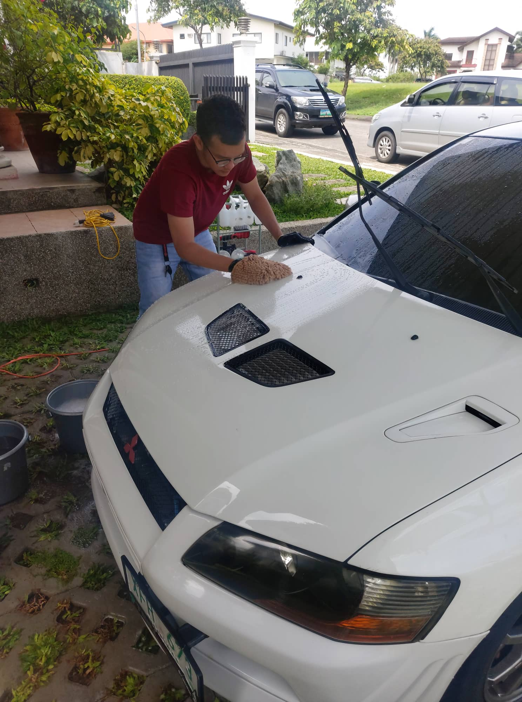

PROGRESS AS A AUTOMOTIVE DETAILER
As a detailer we always take care of your car especially on aesthetic side.
We practice Proper carwash of the vehicle using Washmitts, 2 bucket method, Proper Drying using MicroFibers also electric blowers.

I love cars especially when i was a kid. I always admire that someday i can customize cars. I am a 2nd year college student, currently studying BSIT at the adventist university of the philippnes. This is my detailing vlog for you to see my progress on automotive aesthetics
As a detailer we always take care of your car especially on aesthetic side.
We practice Proper carwash of the vehicle using Washmitts, 2 bucket method, Proper Drying using MicroFibers also electric blowers.
Glass detailing is a part of exterior process which the glass will be clean deeply. Using Acid rain remover to remove acid rains and other surface contaminants of the glass.
After cleaning the glass surface We ensure that we have a Glass protectant and hydrophobic coating as well on the glass. Giving it Protection last for 3 to 5 months on acid rains,bugs and other contaminants
GLASS COATING is the final part of glass detailing process it coated the top layer coat of the glass for protection. Also it is hydrophobic as well to enhance the visibility of the glass.
Hydrophobic coatings are types of coatings that are applied to auto glass to give it self-cleaning properties. These coatings contain titanium oxide that causes water, dust and other debris to be readily dispersed from auto glass.
WE ARE PROFESSIONAL DETAILERS WHO GIVES YOU QUALITY AND CRAFTMANSHIP ON AUTOMOTIVE AESTHETICS
We Offer Paint Correction, Ceramic Coatings , Glass detailing , Interior Detailing, Paint Services